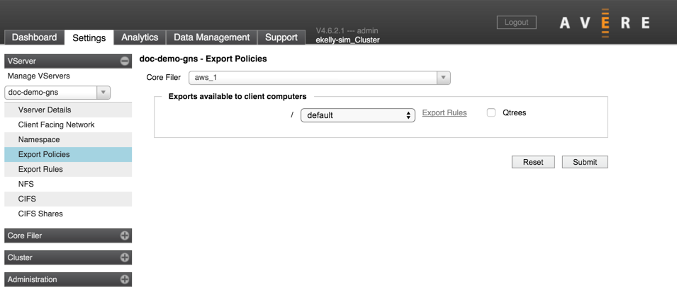

VServer > Export Policies
The Export Policies page allows you to assign a client access policy to each of the exports from a core filer.
Export policies are made up of export rules, which determine how clients matching various conditions are permitted to access files on the back-end storage volume. Use the Export Rules page to create rules and export policies. (A link to the VServer > Export Rules page is included in each table row.)
To learn more about how Avere OS uses export policies to manage client access in the cluster, read Controlling Access to Core Filer Exports.
If you have not modified the default export policy (named default), it provides full access to the exported filesystem.
To apply an export policy:
Navigate to Export Policies page.
Make sure that the correct vserver is selected (use the drop-down selector in the left menu to change vservers if necessary).
Select the core filer for which you want to configure access. The page is populated with the exports available on that core filer.

For each export that clients will access, select the appropriate export policy from the drop-down list. (If you are using a global namespace, some exports might not be accessed by clients. You should apply policies to all exports that are part of a path mapped to a GNS junction. Read Access Control Strategies to learn more about assigning access policies to junctions and sub-junctions.)
Note that an export policy set at the junction level overrides a policy set export. (Junction-level export policies are set from the VServer > Namespace page.)
If applicable, click the Qtrees checkbox.
FXT qtrees permit the Cache Utilization Control feature to limit modified data within top level directories of a root export, so that client rename and hard link operations across FXT qtree boundaries are not permitted.
Note that the properties of FXT qtrees are not the same as those of NetApp qtrees. Read Cache Policy Settings - Advanced Options for more information about configuring the Cache Utilization Control.
Click Submit to apply all of the changes made in this list, or click Reset to restore the original export settings.
Note
If your vserver includes multiple exports that use identical access rules, consider customizing the default export policy, which automatically is applied to all exports. This approach can be more efficient than creating a custom policy and applying it to each export individually.
Unmounting Exports
After an export is defined to the Avere cluster, the cluster assumes it will be continuously available and attempts to reconnect with it if contact is lost. If you want to unmount a back-end storage volume, be sure to follow this procedure to avoid possible delays on the Avere cluster.
Caution
Removing a core filer export from the back-end storage system can cause excessive latency on the Avere cluster if you unmount the export before marking it as offline.
Before unmounting any exports on your core filer, make sure that no client access to those exports is being routed through the FXT Series cluster, even if you plan to unmount and remount the clients.
Follow the procedure for unmounting exports as described in your core filer documentation.
This example, from a NetApp Data ONTAP 7G system, first marks the volume behind the export as offline:
exportfs -u /vol/volX vol offline volXThe -u parameter on the exportfs command unexports the specified volume without changing the Data ONTAP system’s/etc/exportsfile.
If and when the volume comes back online, mark it as online by running the following commands on the Data ONTAP system:
vol online volX exportfs /vol/volXCheck the list on the Export Policies page to ensure that the export no longer appears in the list.